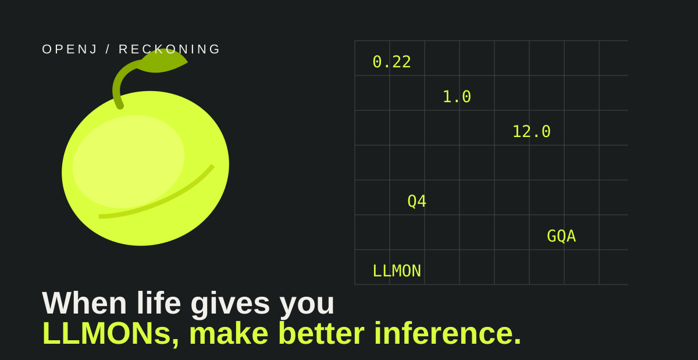

LLMON is an interchange representation for separating instructions, documents, requirements, tools, and execution bindings, and Granite Architecture includes a checkpoint trained to consume it. Reckoning makes that format easier to compose with the LLMON Java DSL, preserves the tokenizer and chat-template path, and publishes a practical Granite 4.1 3B LLMON JQ4 model; browse the supported-models overview for the wider runtime map.